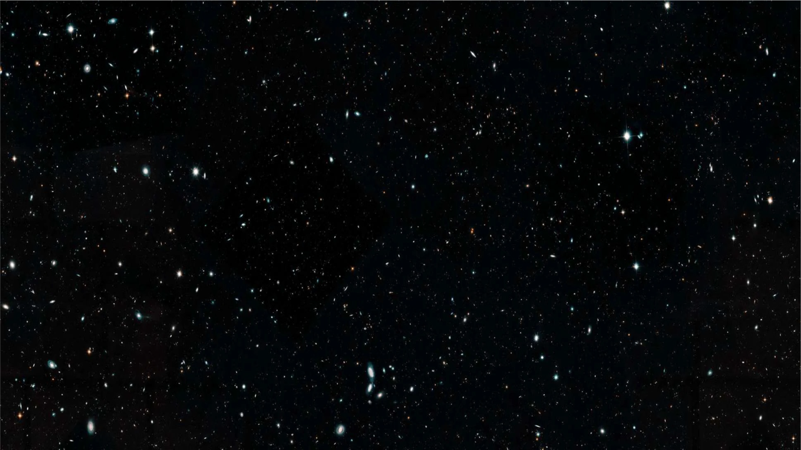
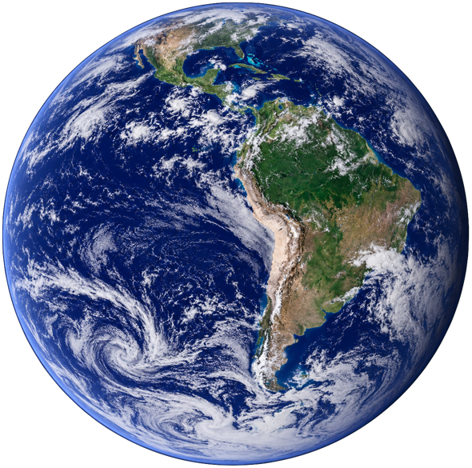
여기 새파란 지구가 있다.


여기 새파란 지구가 있다.
수많은 생물들과 80억 인구가 밟고 사는 고마운 존재, 지구.
이렇게나 평온해보이는 지구도 남모를 아픈 구석이 있다.
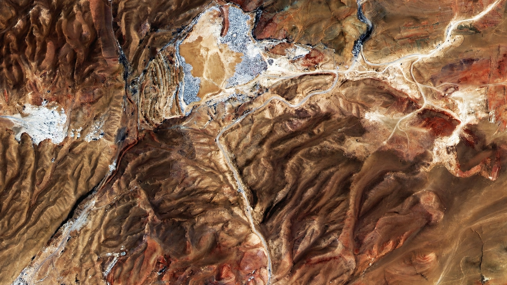
미국의 실시간 위성영상 제공 플랫폼 보유 기업
스카이파이(SkyFi)가 공개한 사진을 보면
헌 옷 무덤이 사막 위에 가득한 것이 확인된다.
우주의 인공위성으로도 보일 정도로
어마어마한 양이 사막 위에 쌓여있는 셈이다.
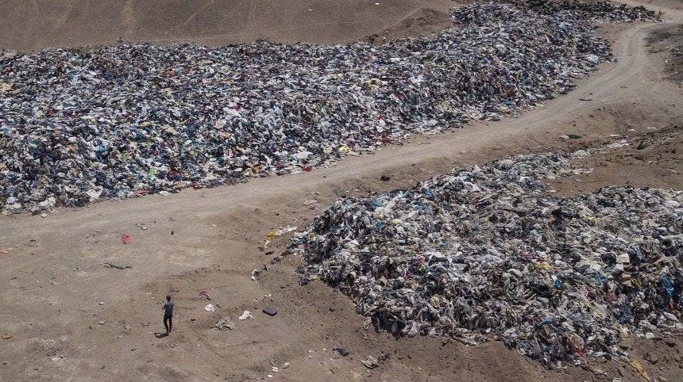
매년 59,000톤에 달하는 중고 및 재고 의류가
이곳, 칠레 북부 이키케 항구로 들어온다.
대다수는 주로 자라, 유니클로, H&M 등의
유명 패스트패션 브랜드에서 제작되었을 것이다.
전세계인이 몇 번 입다 버린 옷들이
모두 이곳에 집결해 쓰레기장이 된 것.
당신의 옷장에는 오랫동안 입지 않아서 버릴 옷이 있나요?
오랫동안 입지 않아서 버릴 옷이 있군요.
오랫동안 입지 않아서 버릴 옷이 없군요.
당신은 미처 알지 못했겠지만,
지금 이 순간에도 많은 양의 옷이 버려지고 있답니다.
버려지는 옷은 어떻게 처리되는지 알아볼까요?
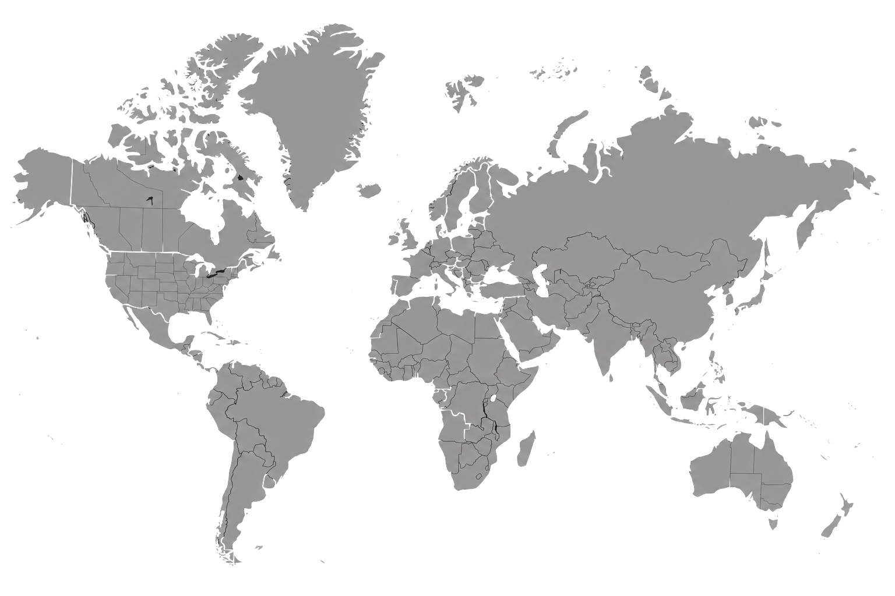
빨간 점을 클릭해서 세계 각국의 헌 옷 무덤 분포와 규모를 확인해보세요.
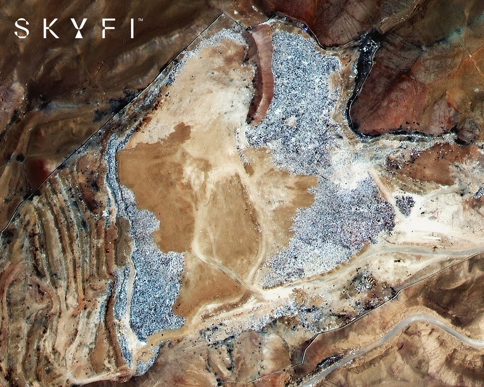
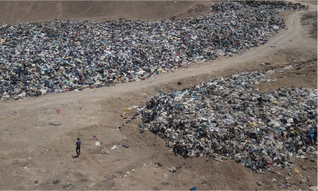
공개된 규모
매년 약 59,000t 이키케 항구로 유입
추정 무게
매년 최소 39,000t
문제 형태
우주 위성에서도 관측될 정도의 거대한 산 형성, 합성섬유의 비생분해 및 독성 물질 방출
칠레 아타카마 이키케
Chile Atacama Iquique
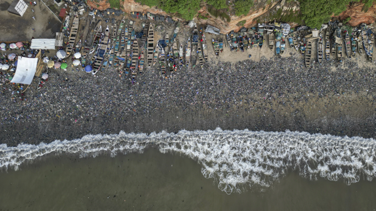
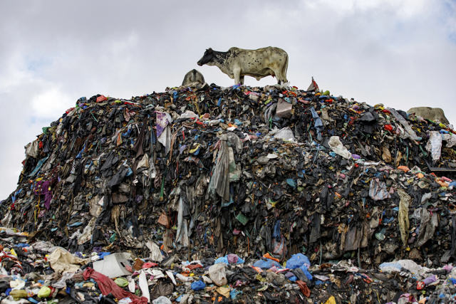
공개된 규모
매주 약 1,500만 벌 유입, 이중 약 40% 폐기 추정
추정 무게
주당 약 1,800~3,000t (600만 벌 × 벌당 0.3~0.5kg 가정)
문제 형태
시장 주변 폐의류 적치, 배수로 막힘, 해안 퇴적, 토양·해양오염
가나 아크라 칸타만토
Ghana Accra Kantamanto
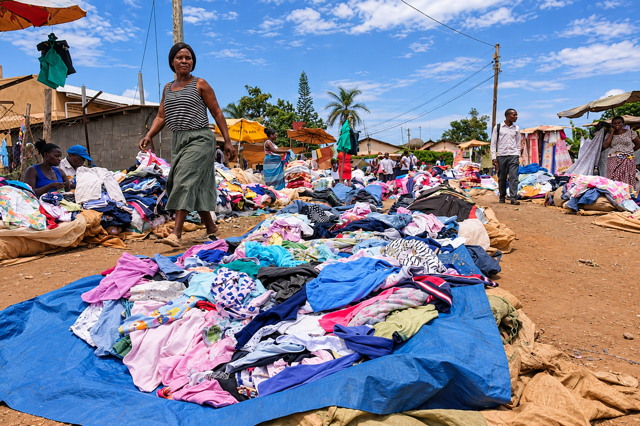
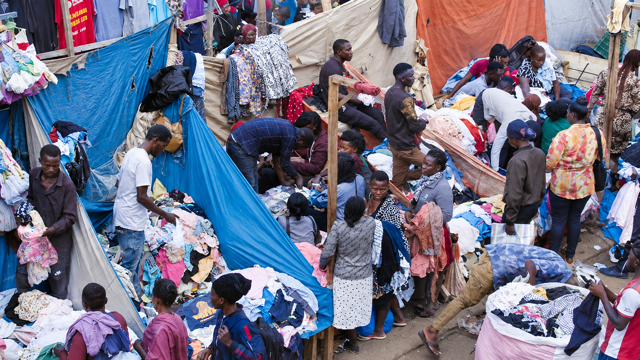
공개된 규모
동아프리카 내륙 최대 중고 의류 시장으로 매주 수백 t의 의류 반입
추정 무게
연간 약 2만~3만 t
문제 형태
빅토리아 호수 인근 습지 불법 투기, 소각으로 인한 대기오염
우간다 캄팔라 오위노
Uganda Kampala Owino
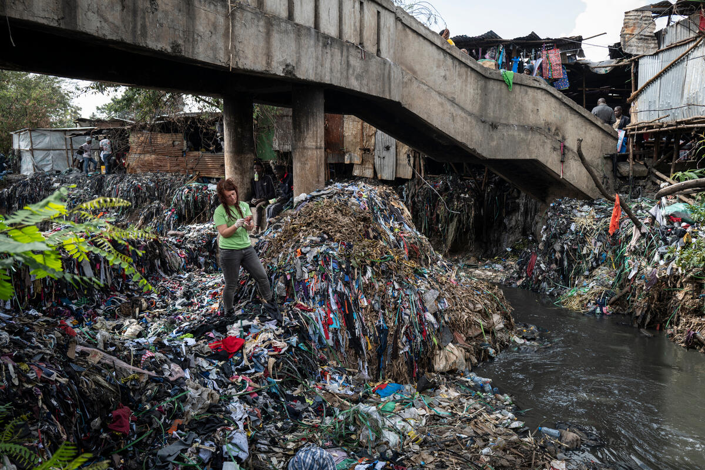
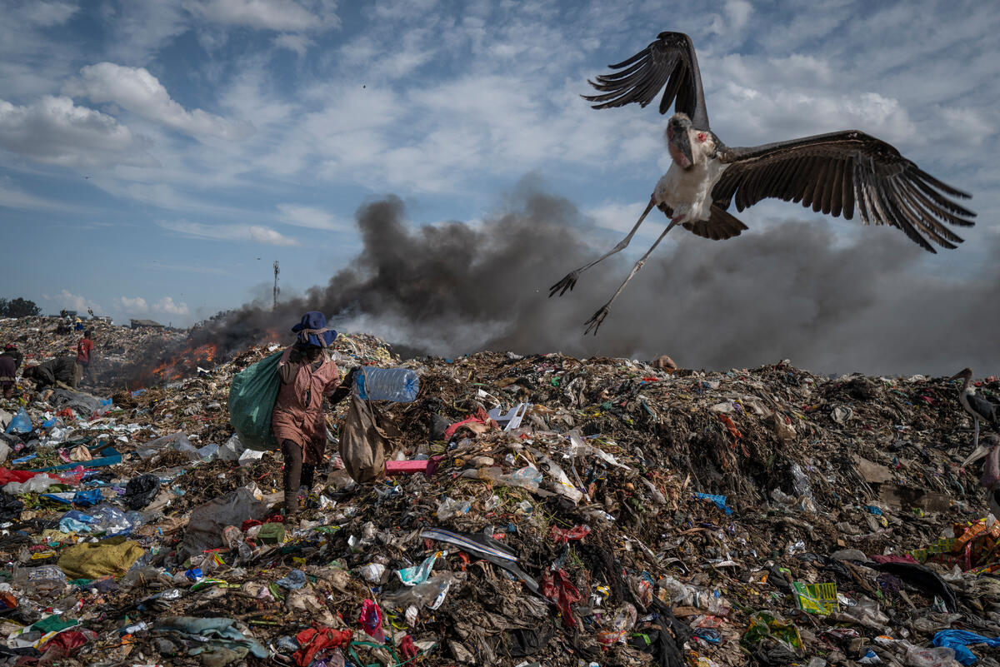
공개된 규모
연간 약 18만 5,000t 이상의 중고 의류(미툼바) 수입, 30~40% 폐기
추정 무게
연간 약 5만 5,000~7만 4,000t
문제 형태
동아프리카 최대 매립지(단도라) 과포화, 나이로비 강 수질 오염 및 유독가스 발생
케냐 나이로비 기콤바
Kenya Nairobi Gikomba
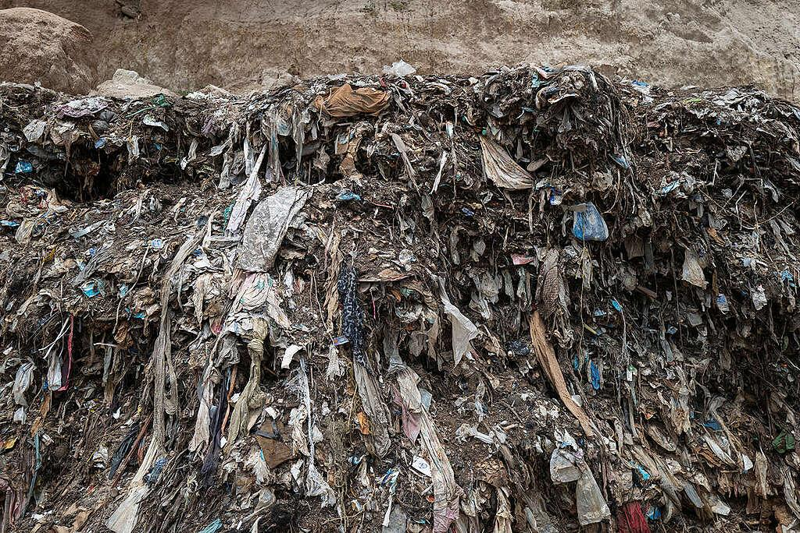
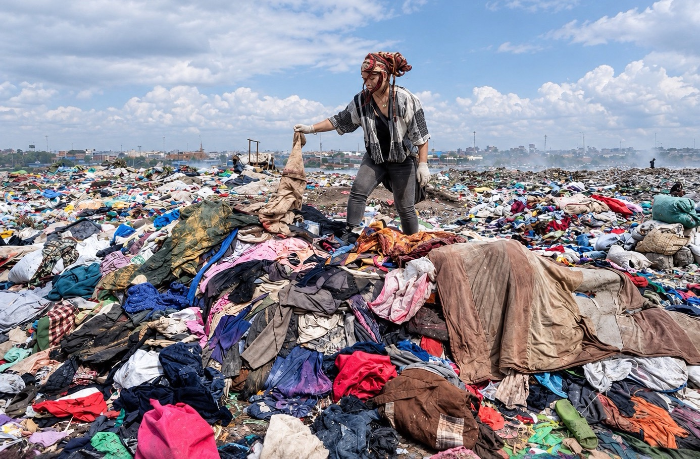
공개된 규모
동아프리카 주요 항구 도시로 연간 수만 톤의 저품질 중고 의류 유입
추정 무게
연간 약 3만~5만 t 이상
문제 형태
비공식 매립지 적치, 우기 시 배수구 막힘으로 인한 도심 침수 및 하천 오염
탄자니아 다르에스살람
Tanzania Dares Salaam
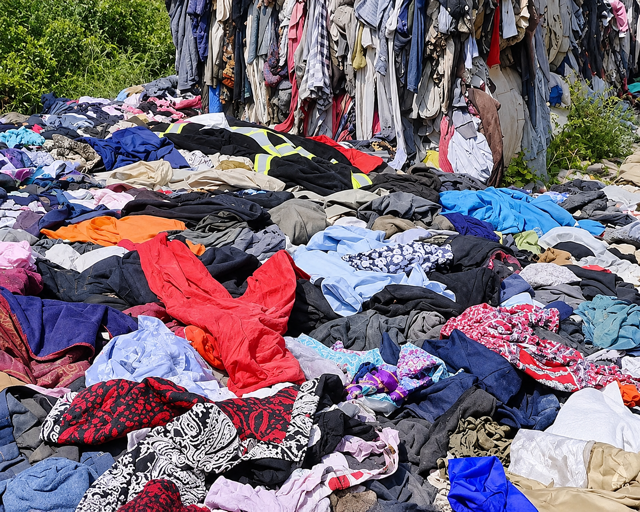
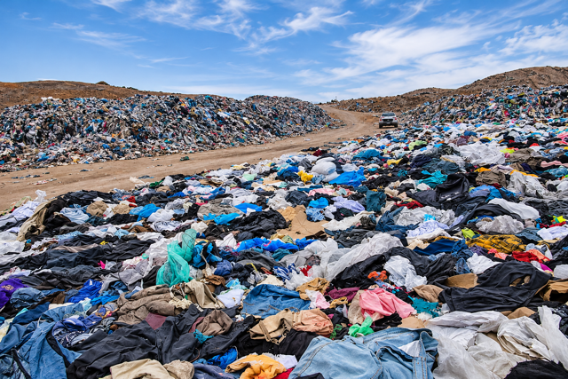
공개된 규모
연간 약 40만~50만t 수입
추정 무게
연간 약 8만~12만t
문제 형태
항만 인근 불법 매립, 산업용 보일러 연료로 무단 소각되어 심각한 대기오염 초래
파키스탄 카라치
Pakistan Karachi
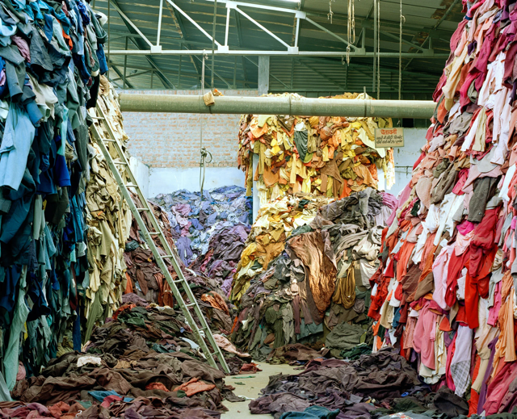
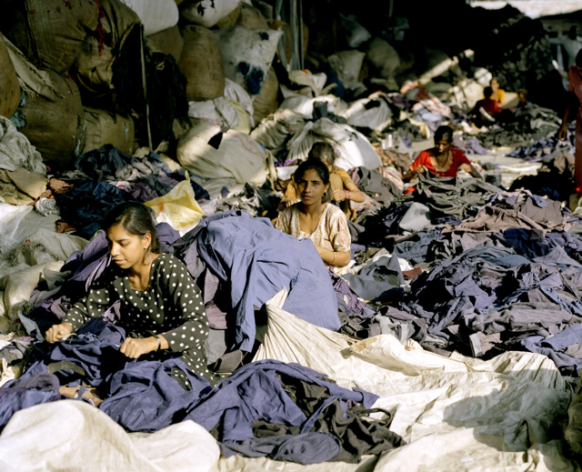
공개된 규모
매일 수백 톤 유입, 재방적(쇼디) 공정 후 남은 합성섬유·부자재 대량 폐기
추정 무게
연간 약 10만t 이상
문제 형태
지퍼·단추 등 비분해성 잔여물 노천 투기, 염색·세척 폐수로 인한 지하수 오염
인도 파니파트
India Panipat
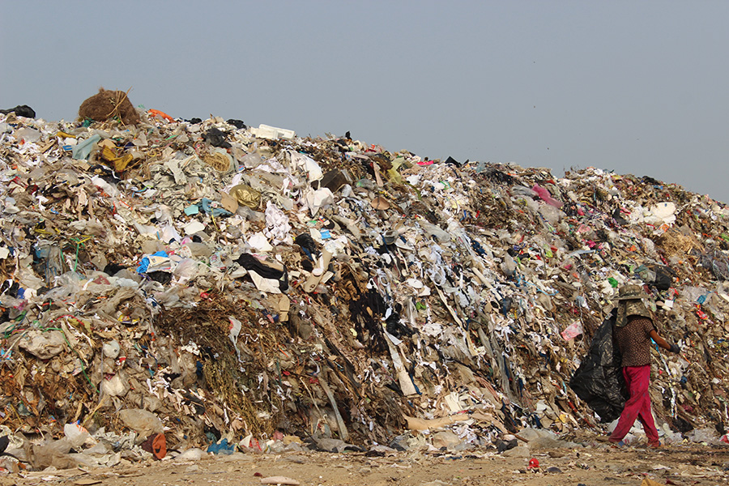
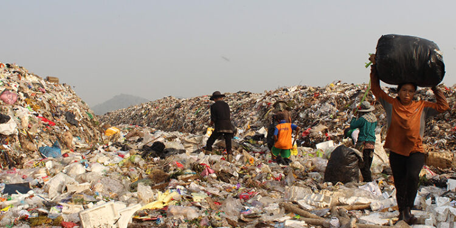
공개된 규모
동남아 의류 봉제 공장 밀집 지대로 원단 자투리·불량 재고·수입 구제 폐기물 집중
추정 무게
연간 약 2만~4만t
문제 형태
국경 하천(모에이강) 변 불법 투기, 야간 노천 소각으로 인한 국경 지역 스모그 및 유해물질 확산
미얀마·태국 매솟
Myanmvvar‒Thailand Mae Sot
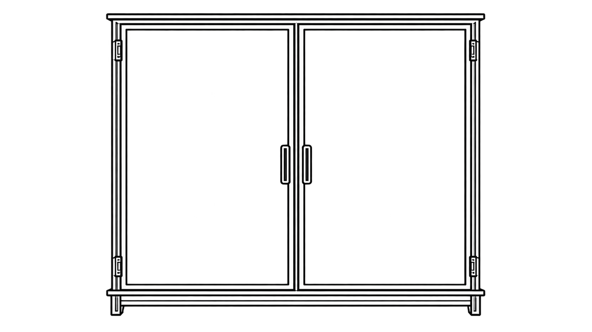
옷장을 클릭하세요.
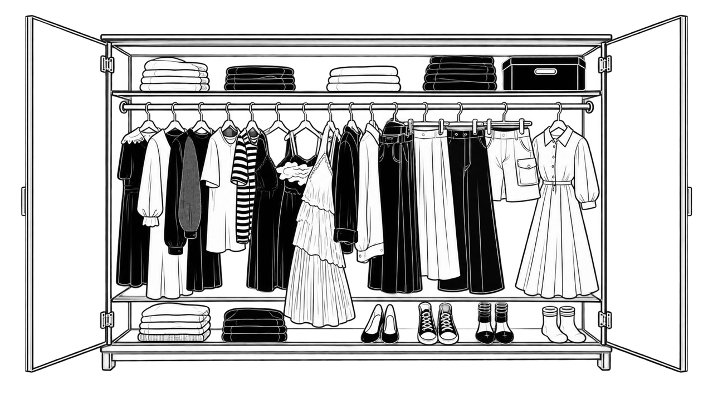
이중에 원하는 옷을 선택하여
그 옷을 만드는 데 필요한 에너지 자원과
분해되는 데 걸리는 소요 시간을 확인해보세요.
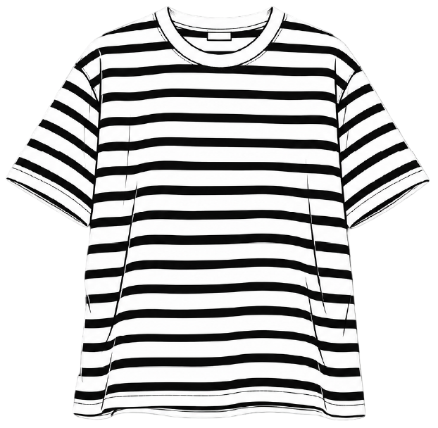
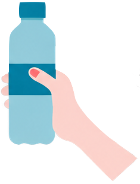
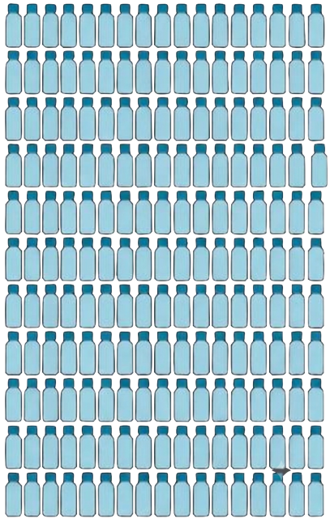
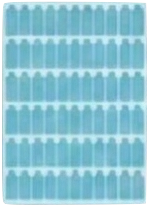
물 사용량
500ml 생수병 1개
500ml 생수병 200개 = 물 100L
T-shirt
티셔츠
물 2,700L (= 생수병 5,400개)
소재별 분해 소요시간
T-shirt
티셔츠
면 Cotton
린넨 Linen
대마 Hemp
레이온 Rayon
울 Wool
실크 Silk
나일론 Nylon
폴리에스터 Polyester
1주~5개월
2주~6개월
2주~8개월
6개월~2년
1~5년
4년
수십 년
수십~수백 년
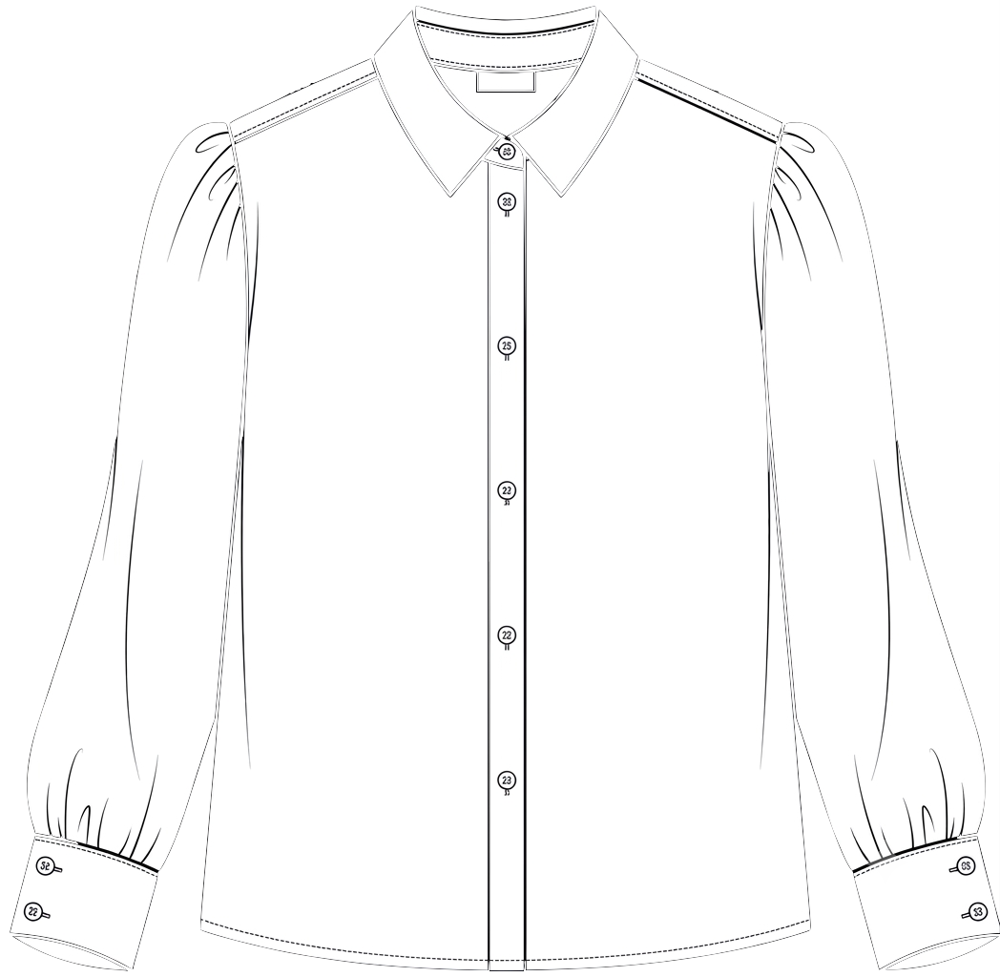
물 사용량
Blouse
블라우스
500ml 생수병 1개
500ml 생수병 200개 = 물 100L
물 2,870L (= 생수병 5,740개)
소재별 분해 소요시간
Blouse
블라우스
린넨 Linen
면 Cotton
실크 Silk
울 Wool
나일론 Nylon
폴리에스터 Polyester
아크릴 Acrylic
스판덱스 Spandex
수 주
3개월
1~2년
1~5년
30~40년
20~200년
수백 년
수십~수백 년
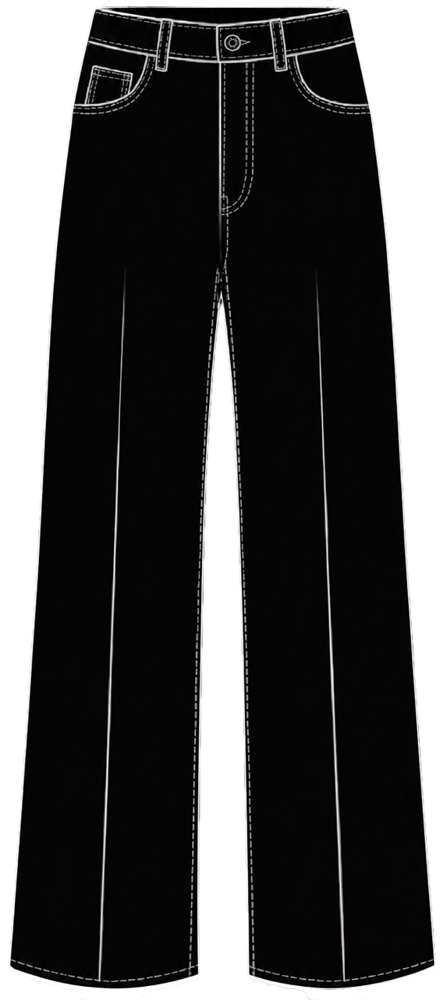
물 사용량
Jeans
청바지
500ml 생수병 1개
500ml 생수병 200개 = 물 100L
물 3,780L (= 생수병 7,560개)
소재별 분해 소요시간
면 Cotton
폴리에스터 Polyester
스판덱스 Spandex
면+폴리에스터
면+스판덱스
금속 부자재 Metal
약 3개월
약 20~200년
수십~수백 년
약 20~200년
수십~수백 년
생분해 안됨
Jeans
청바지
당신은 1년에 새 옷을 몇 벌 구매하나요?
계산 중.
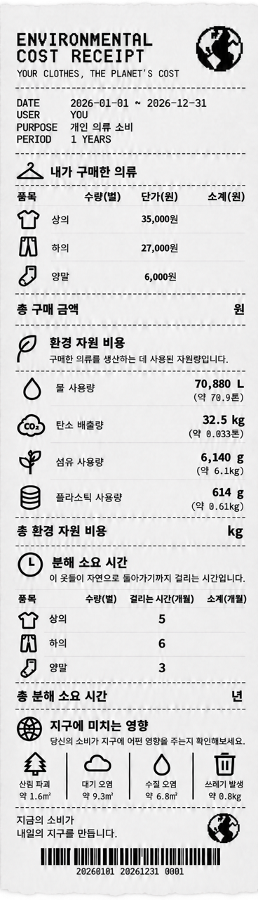
입력한 의류 종류별 구매 수량과 에너지 자원 소비량을 곱한 후
모두 더한 총량이 적힌 환경 영수증이 발급되었습니다.
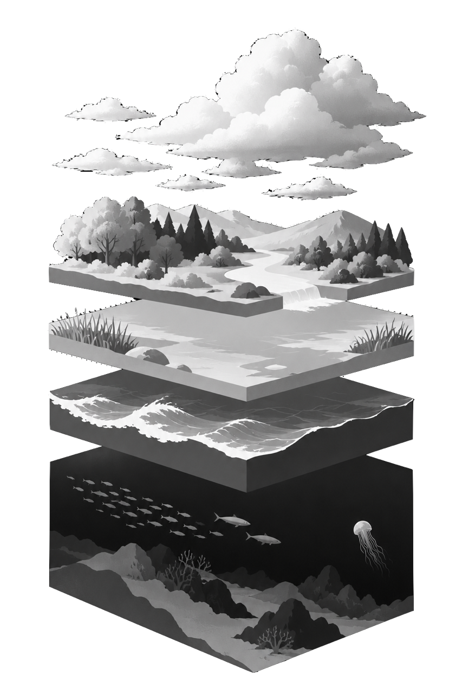
다음은 지구 생태계 시스템을 층별로 구분한 층상 단면도입니다.
토양, 물, 공기, 생물 등 생태계의 각 요소를 선택하면
해당 영역에서 발생하는 환경오염의 유형과 구체적인 피해 수치를 확인할 수 있습니다.
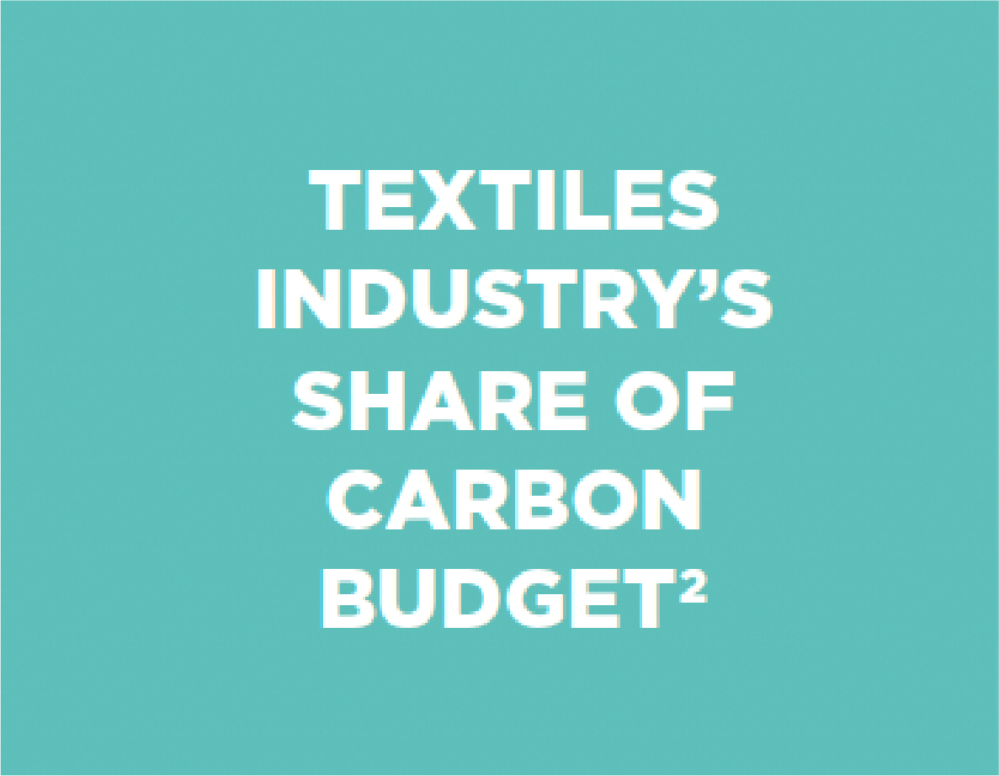
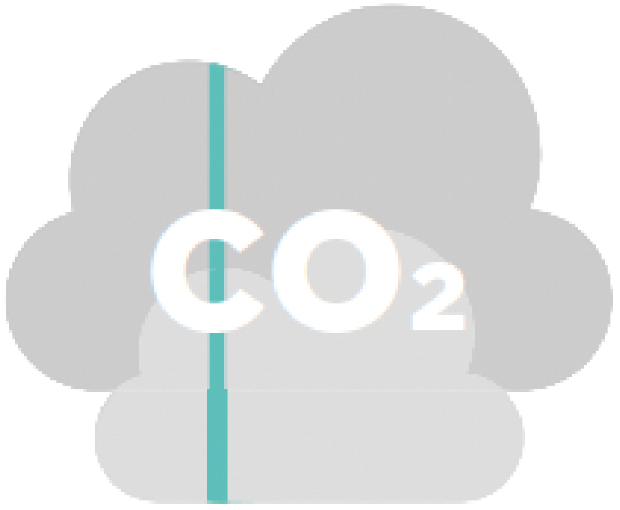
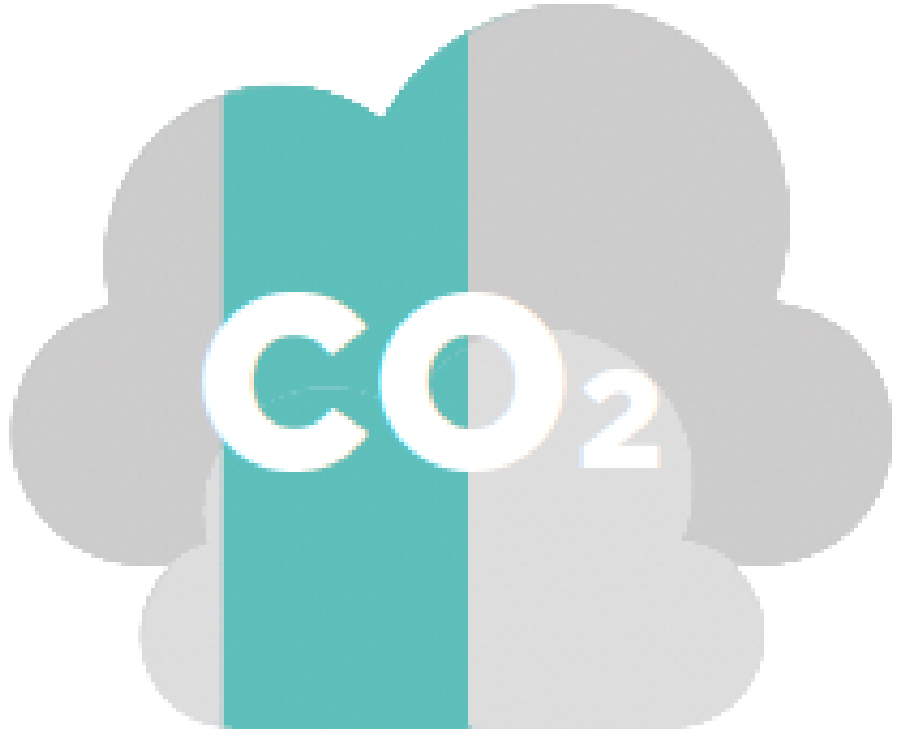
대기 의 환경오염 피해
Air
생산, 운송, 폐기 과정에서 온실가스가 배출되며 기후변화를 가속화한다.
2015년 섬유 산업은 전 세계 탄소 예산의 약 2%를 차지했으며
현재와 같이 지속될 경우 2050년에는 최대 26%까지 증가할 것으로 전망되었다.
또한 섬유 산업의 비재생 자원 소비량은
2015년 약 9,800만 톤에서 2050년 약 3억 톤으로 증가할 것으로 예측되어
의류 산업이 지구 환경에 미치는 부담이 더욱 커질 것으로 우려된다.
2%
26%
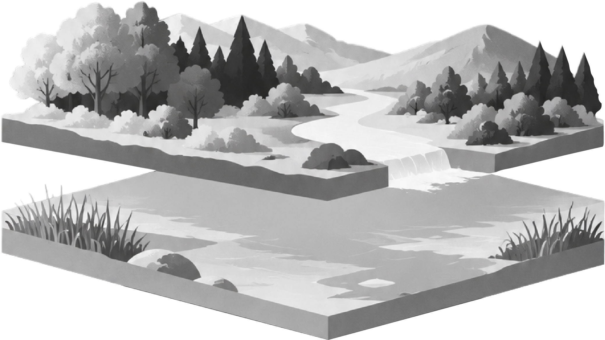
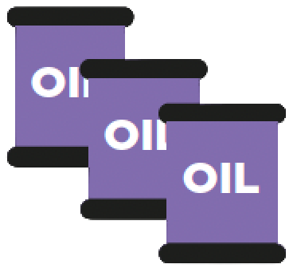
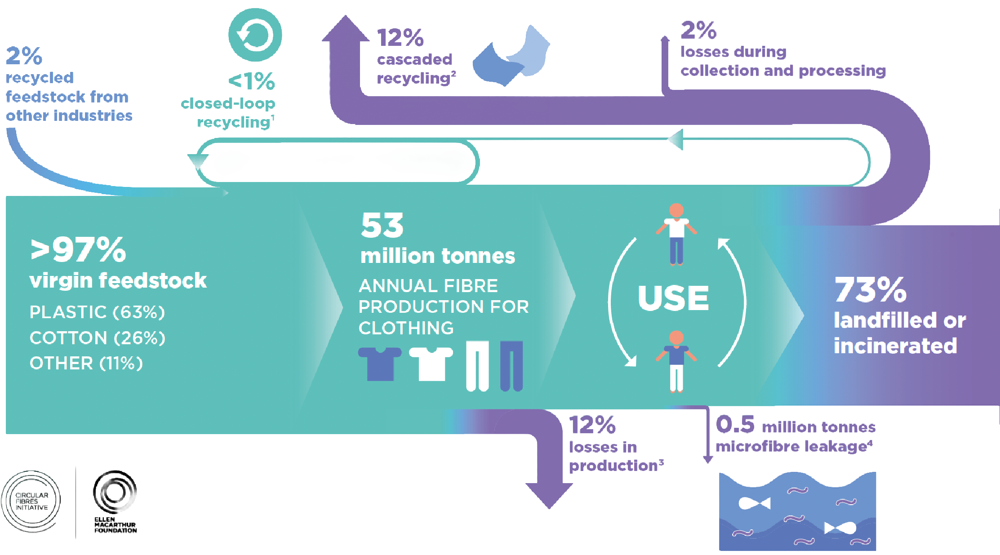
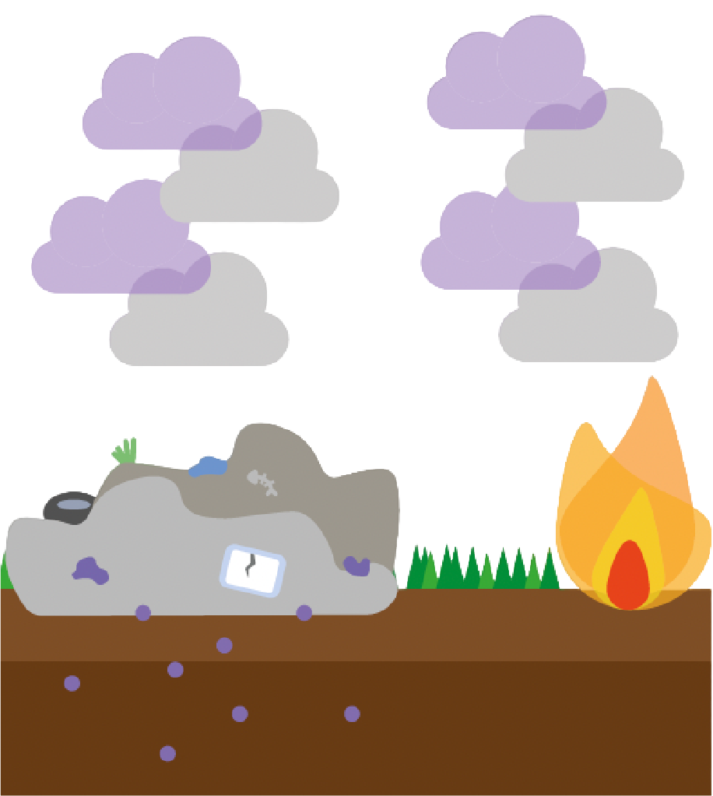
토양 의 환경오염 피해
Soil
의류 생산을 위해 매년 5,300만 톤의 섬유가 사용되며, 이중 97% 이상이
플라스틱(63%) 등의 신규 자원으로 만들어진다. 이러한 자원 소비량은
2015년 9,800만 톤에서 2050년 3억 톤으로 3배 이상 급증할 전망이다.
하지만 재활용률은 1% 미만으로 극히 저조하며, 전체 의류의 73%가 버려진다.
결국 이것들이 모두 토양에 매립되거나 소각되면서 심각한 토양오염을 초래한다.
98 MILLION
TONNES
300 MILLION
TONNES
2015
2050
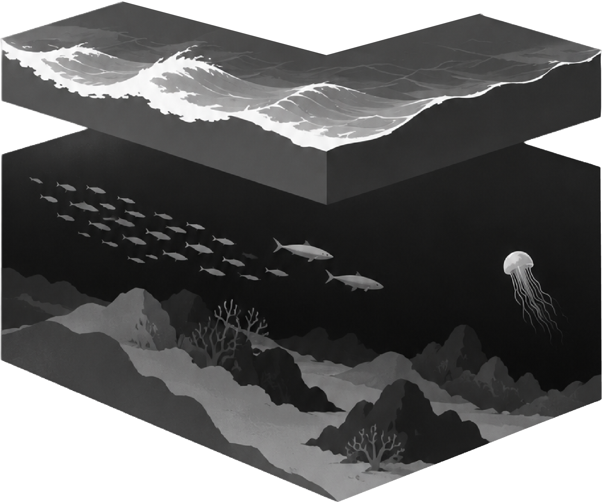
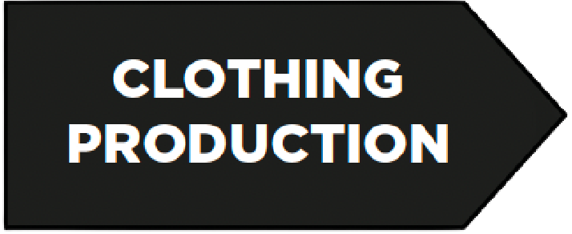
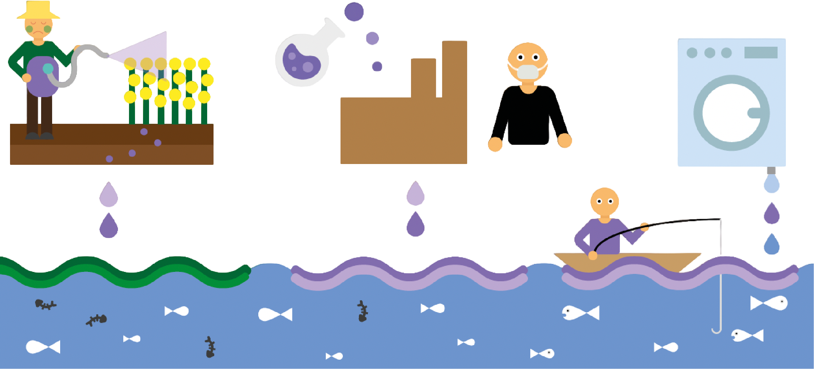
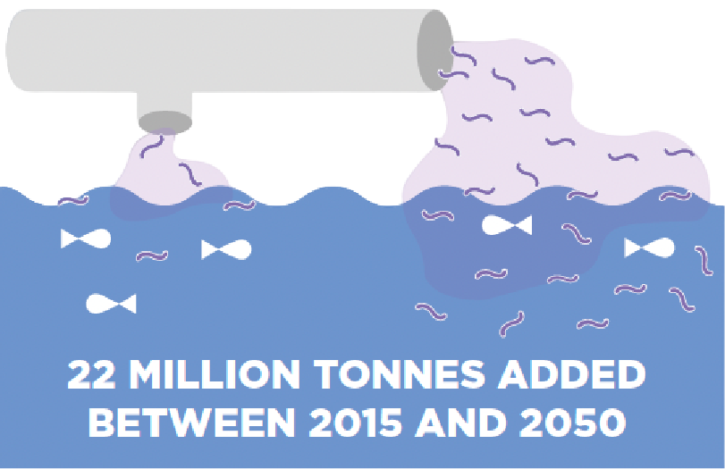
해양 의 환경오염 피해
Ocean
합성섬유 의류를 세탁하거나 폐기하는 과정에서 미세플라스틱이 바다로 유입되며,
이는 해양 생물의 체내에 축적되어 먹이사슬을 통해 확산된다.
2015년부터 2050년까지 약 2,200만 톤의 미세섬유가 추가 유입될 것으로 전망된다.
생산 및 운송 과정에서 발생하는 온실가스는 해수 온도 상승에도 영향을 미친다.
기업
개인
정부
다음은 우리의 사회를 구성하는 사회 주체들입니다.
정부, 기업, 개인 중 하나를 선택하면
해당 사회주체가 패스트패션 문제의 해결을 위해 노력하는 방법을 확인할 수 있습니다.
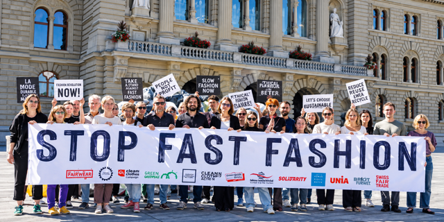
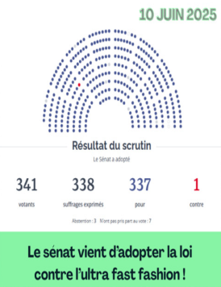
정부
정부 의 패스트패션 해결 사례
Government
프랑스 정부는 의류 폐기물을 줄이기 위해 세계 최초로 의류·신발 수선 보너스 제도를 도입했다.
소비자가 지정된 수선소에서 옷이나 신발을 고치면 수선 비용의 일부(약 6~25유로)를 정부가 직접 지원해,
새 옷을 사는 대신 오래 입도록 유도한다. 또한 대량 생산·초저가 패스트패션 기업에 환경 부담금을 부과하고
광고를 금지하는 법안을 추진하여 생산 단계부터 규제를 강화하고 있다.
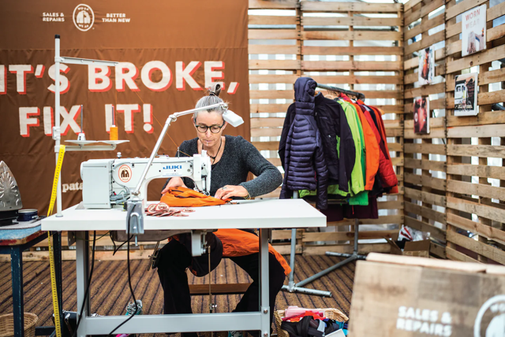
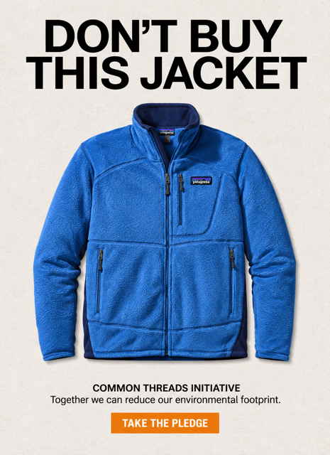
기업
기업 의 패스트패션 해결 사례
Company
아웃도어 브랜드 파타고니아는 연중 최대 쇼핑 대목인 블랙 프라이데이에 뉴욕타임스 전면 광고를 통해
자사 제품을 사지 말라는 '이 자켓을 사지 마세요(Don't Buy This Jacket)' 캠페인을 진행했다.
광고 하단에는 자켓 한 벌을 생산할 때 소모되는 막대한 양의 물과 이산화탄소 배출량을 투명하게 공개하며,
꼭 필요한 옷만 구매할 것을 촉구했다. 이 역발상 캠페인은 환경 보호에 대한 진정성을 소비자에게 각인시켜
브랜드 충성도를 높였으며, 결과적으로 매출이 약 30% 상승하는 성과를 이뤘다.
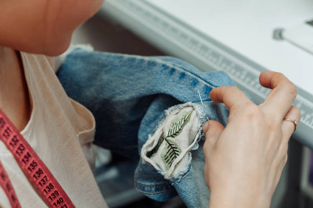
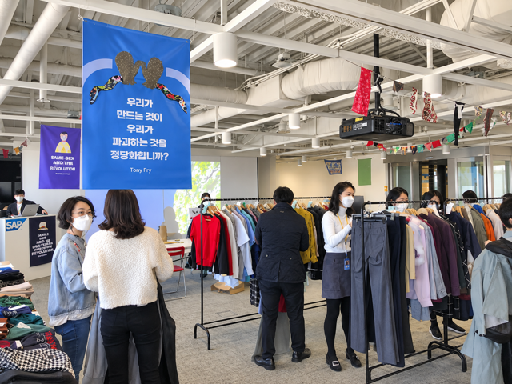
개인
개인 의 패스트패션 해결 사례
personal
깨끗하고 바로 입을 수 있는 옷을 가져가 안 입는 옷을 서로 교환하는 의류 스왑(Swap) 파티에 참여 할 수 있다.
천연 소재나 리사이클(recycle) 원단으로 제작된 옷을 선택하고, 구매 전 최소 30번 이상 입을 옷인지 고민하는
'30번 입기 챌린지' 등을 실천하는 방법이 있는데 유행이나 충동에 따라 옷을 구매하기보다
실제로 자주 입을 수 있는지를 먼저 판단하자는 취지이다. 새 옷을 사기 전에 옷장에 있는 옷과 조합할 수 있는지,
계절과 상황에 맞게 반복해서 입을 수 있는지 확인하면 손이 잘 가지 않는 옷의 구매를 줄이는 데 도움이 된다.